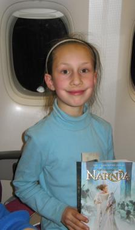
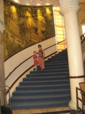

On 01-09-2007 my family and I woke up on a plane and had breakfast at 5 o'clock. I had eaten so much that I vomited! We landed in Thailand and it was wet because Thailand is wet and humid. After that we went through the airport and my passport got the first stamp. It was a purple stamp and a rectangle shape. Next we caught a bus. We waited for a long time in the heat then finally the bus came and we got on. Next we went to a hotel and lay down. I had a very late breakfast because I vomited. It was a delicious breakfast. Afterwards my dad and I went down to the swimming pool and had fun splashing. We got very wet and warm. Then we walked back to our room and I read by myself a bit of The Magician's Nephew. It was exciting being in a different country.
 